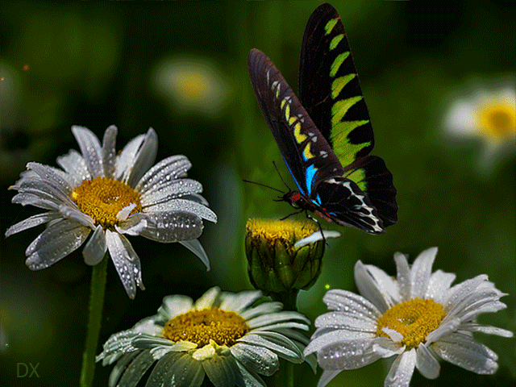
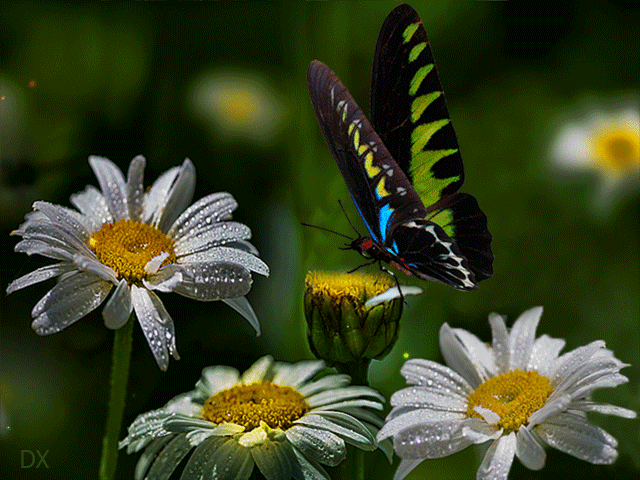

Los lepidópteros, mas conocidos comúnmente como mariposas, son unos insectos pertenecientes al orden de los homometábolos, un grupo de insectos superiores, los cuales, a lo largo de su vida sufren una serie de transformaciones complejas conocida como metamorfosis, y en la que se suceden las fases de embrión, larva, pupa e imago.
Las mariposas son un tipo de insecto muy popular por los llamativos colores que tiñen sus alas y por su vuelo vacilante cuando se acerca el buen tiempo. Se han descrito unas 24.000 especies diferentes.
 
